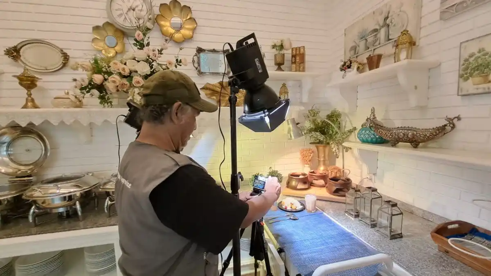

Jasa Dokumentasi Foto Video Bandung

Gunawan Satyakusuma Jasa Dokumentasi Foto Video Bandung menghadirkan pendekatan dokumentasi yang tidak hanya berorientasi pada hasil visual, tetapi juga pada nilai informasi, branding, serta visibilitas digital. Dokumentasi dipandang sebagai aset yang dapat terus dimanfaatkan setelah sebuah kegiatan selesai.
Di tengah banyaknya penyedia jasa dokumentasi foto dan video di Bandung, perbedaan utama tidak lagi hanya terletak pada kamera, drone, atau perlengkapan yang digunakan. Yang lebih penting adalah bagaimana dokumentasi mampu menghasilkan informasi yang relevan dan memiliki manfaat jangka panjang.
Pendekatan inilah yang menjadi karakter Gunawan Satyakusuma Jasa Dokumentasi Foto Video Bandung, yaitu menghasilkan dokumentasi yang tidak hanya menarik secara visual, tetapi juga mendukung publikasi, portofolio perusahaan, website, media sosial, Google Business Profile, hingga kebutuhan arsip organisasi.
Saat ini dokumentasi tidak lagi berhenti sebagai kumpulan foto atau video. Setiap hasil dokumentasi dapat menjadi bagian dari strategi komunikasi, branding, dan reputasi digital sebuah perusahaan maupun organisasi.
Karena itu setiap pengambilan gambar dilakukan dengan mempertimbangkan alur kegiatan, interaksi peserta, identitas penyelenggara, hingga kebutuhan publikasi di berbagai platform digital.
Dokumentator profesional tidak hanya menunggu momen terjadi, tetapi memahami tujuan sebuah acara. Siapa audiensnya, pesan apa yang ingin disampaikan, serta momen mana yang memiliki nilai informasi paling tinggi.
Melalui pendekatan tersebut, Gunawan Satyakusuma Jasa Dokumentasi Foto Video Bandung menghasilkan dokumentasi yang mampu menjelaskan sebuah kegiatan kepada orang yang bahkan tidak hadir di lokasi.
Dokumentasi yang baik memiliki alur cerita. Mulai dari persiapan acara, proses kegiatan, interaksi peserta, hingga penutupan, seluruh rangkaian disusun menjadi narasi visual yang utuh.
Pendekatan storytelling membuat dokumentasi lebih mudah dimanfaatkan untuk artikel, laporan kegiatan, website perusahaan, media sosial, maupun kebutuhan promosi lainnya.
Di era digital, satu kegiatan biasanya dipublikasikan melalui berbagai media. Oleh karena itu hasil dokumentasi dipersiapkan agar sesuai untuk website, Instagram, LinkedIn, Google Business Profile, presentasi perusahaan, hingga publikasi berita.
Dengan perencanaan yang baik, klien memperoleh dokumentasi yang fleksibel tanpa perlu melakukan sesi pemotretan tambahan.
Foto yang baik mampu menarik perhatian, namun dokumentasi yang memiliki konteks akan terus memberikan manfaat selama bertahun-tahun. Dokumentasi tersebut dapat menjadi arsip organisasi, bukti aktivitas perusahaan, referensi sejarah, hingga aset digital yang memperkuat reputasi.
Melalui filosofi tersebut, Gunawan Satyakusuma Jasa Dokumentasi Foto Video Bandung memandang dokumentasi sebagai investasi informasi, bukan sekadar hasil foto dan video.
Memilih jasa dokumentasi foto dan video di Bandung sebaiknya tidak hanya berdasarkan kualitas kamera atau jumlah hasil foto. Yang lebih penting adalah kemampuan memahami kebutuhan klien, menyusun cerita visual, serta menghasilkan dokumentasi yang dapat terus dimanfaatkan untuk branding, komunikasi, dan visibilitas digital.
Dengan pendekatan yang terstruktur, Gunawan Satyakusuma Jasa Dokumentasi Foto Video Bandung berupaya menghadirkan dokumentasi profesional yang bernilai, relevan, dan mampu menjadi aset digital jangka panjang bagi setiap klien.